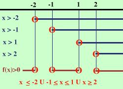

|
x4 - 5x2 + 4 Considero l'equazione associata x4 - 5x2 + 4 = 0 Si tratta di un'equazione biquadratica Risolvo x1 = -2 x2 = -1 x3 = 1 x4 = 2 Quindi la disequazione e' equivalente a (x+2) (x+1) (x-1) (x-2) Devo risolvere le quattro disequazioni (x+2) (x+1) (x-1) (x-2) e considerare dove il prodotto dei segni da' un risultato positivo perche' devo trovare i valori dove tutta l'espressione e' positiva, inoltre devo anche vedere dove l'espressione si annulla Risolvo la prima: x + 2 Risolvo la seconda x + 1 Risolvo la terza x - 1 Risolvo la quarta x - 2 faccio lo schema (l'unica differnza con gli esercizi precedenti e' che devo fare piu' righe) x x x x f(x) + + + (-2) - - - - - (-1) + + + + (1) - - - - - (2) + + + + + + + f(x) indica l'espressione di partenza La parentesi tonda indica che l'espressione si annulla nel punto Io devo cercare dove l'espressione e' positiva o nulla e questo succede per x oppure in altra notazione  |